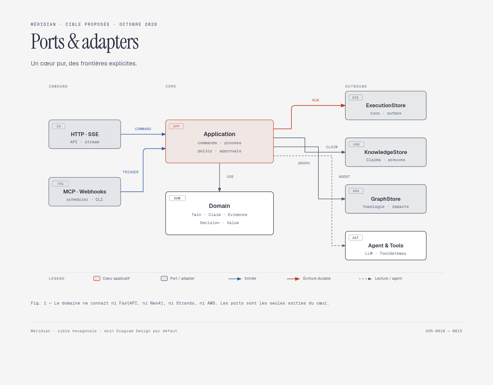
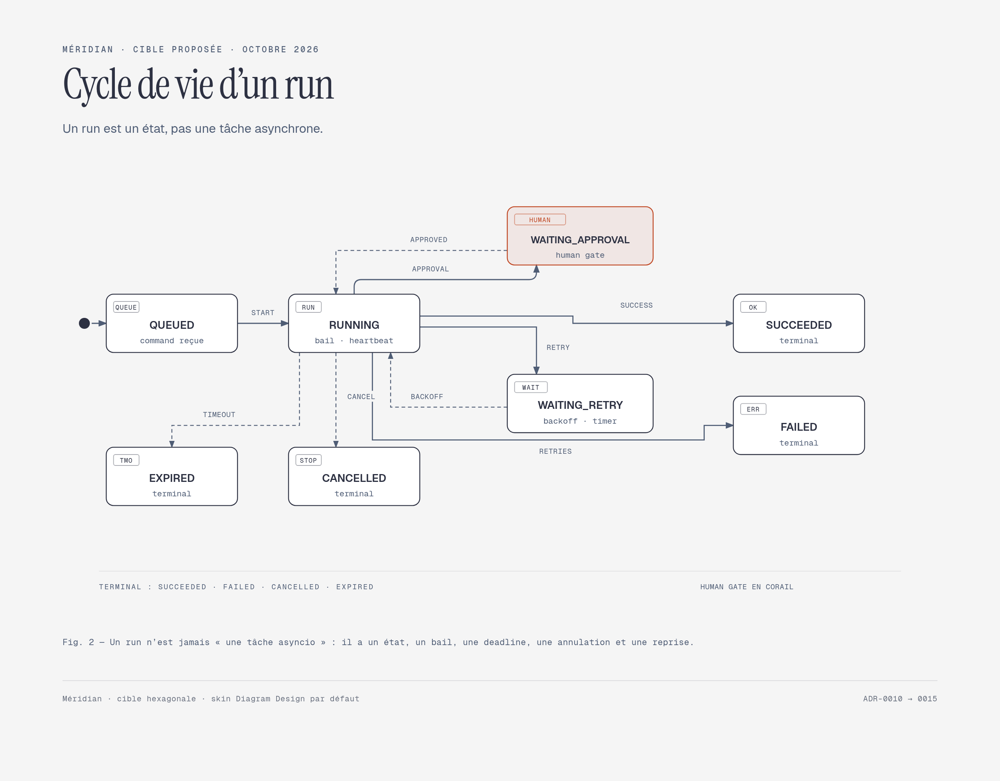
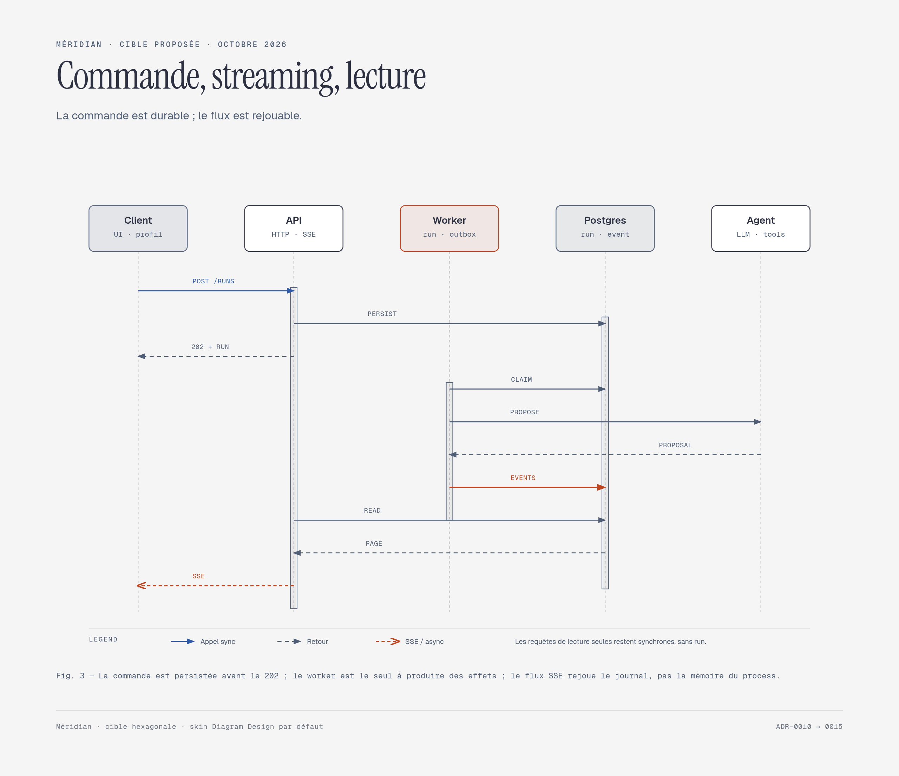

Méridian · Cible proposée · Octobre 2026
Un cœur hexagonal,
un runtime qui survit.
Trois vues pour discuter la cible : les frontières du cœur, le cycle de vie d’un run et la sémantique sync/async. Les ADR-0010 à 0015 verrouillent les décisions ; l’implémentation reste à faire.


Durable d’abord
Postgres porte runs, événements, outbox, inbox, timers et idempotence. Redis reste un accélérateur, pas une vérité.
Agent = proposition
Le workflow déterministe possède les états, les gates et les approbations. ToolGateway possède les effets.
AWS = adapter
ECS, RDS, SQS, EventBridge, Bedrock et Secrets Manager restent derrière les ports. Aucun SDK AWS dans le domaine.